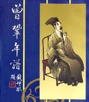

百家讲坛全集
>
百家讲坛2010
>
百家讲坛 唐宋八大家_曾巩

名称：
集数：
播出时间：
百家讲坛 唐宋八大家_曾巩
3
2010年09月28日
曾巩（1019年9月30日－1083年4月30日，天禧三年八月二十五日－元丰六年四月十一日），字子固，世称“南丰先生”。汉族，建昌南丰（今属江西）人，后居临川（今江西抚州市西）。曾致尧之孙，曾易占之子。嘉�v二年（1057）进士。北宋政治家、散文家，“唐宋八大家”之一，为“南丰七曾”（曾巩、曾肇、曾布、曾纡、曾��、曾协、曾敦）之一。在学术思想和文学事业上贡献卓越。
分集介绍
《百家讲坛》 唐宋八大家_曾巩 （一） 非常七加一
播出时间：
主讲人：
介绍：
2010年09月28日
康震
曾巩字子固，江西南丰人，我国北宋时期著名的散文家，公元1019年生，1083年病逝于江苏南京，终年六十五岁。曾巩的散文成就很高，是北宋诗文革新运动的积极参与者，宋代古文运动的重要骨干。可遗憾的是，尽管曾巩得到文坛宗师欧阳修的极力推崇，但他却是“唐宋八大家”中最令我们当代人感到陌生的一位。曾巩流传至今的诗作有四百多首，虽然与苏轼、欧阳修这样的诗词大家无法相提并论，但是大多也都写得质朴、雄浑超逸、寓意深刻。
《百家讲坛》 唐宋八大家_曾巩 （二） 不经风雨怎见彩虹
播出时间：
主讲人：
介绍：
2010年09月29日
康震
曾巩字子固，江西南丰人，是我国北宋时期著名的散文家，他是八大家里面最有特点的一位大文章家，他这样的地位是来之不易的，他39岁才考中进士，同年，家里六人同门考中进士，之后又有三人考中进士，考中进士的时候，曾巩的家庭情况非常苦难，不仅要侍奉老祖母和父亲，还要供妹妹和弟弟读书，又面临因为穷困而夭折的两个女儿的伤痛，然而，在这样艰巨的环境中，曾巩却依然没有放弃求学的愿望，最终，在欧阳修的帮助下，他完成了自己的愿望，成为我国文坛史上的大家。
《百家讲坛》 唐宋八大家_曾巩 （三） 身处乡野名比天高
播出时间：
主讲人：
介绍：
2010年09月30日
康震
排名“唐宋八大家”最后一位的曾巩，人生经历十分独特，生活特别困苦。有二十多年的时间，他一直待在自己的家乡江西农村，为全家的生计奔波。但生活的艰辛并没有影响他做学问和写文章，一旦他有文章面世，就会很快流布天下，广为传诵。读过他文章的人，不但不知道曾巩此时生活在偏僻的乡村，反而会认为他一直身处朝廷之中。